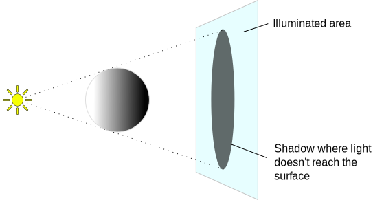

Shadows
Unity's lights can cast Shadows from an object onto other parts of itself or onto other nearby objects. Shadows add a degree of depth and realism to a scene since they bring out the scale and position of objects that can otherwise look "flat".

How do shadows work?
Consider the simplest case of a scene with a single light source. Light rays travel in straight lines from that source and may eventually hit objects in the scene. Once a ray has hit an object, it can't travel any further to illuminate anything else (ie, it "bounces" off the first object and doesn't pass through). The shadows cast by the object are simply the areas that are not illuminated because the light couldn't reach them.

Another way to look at this is to imagine a camera at the same position as the light. The areas of the scene that are in shadow are precisely those areas that the camera can't see.

In fact, this is exactly how Unity determines the positions of shadows from a light. The light uses the same principle as a camera to "render" the scene internally from its point of view. A depth buffer system, as used by scene cameras, keeps track of the surfaces that are closest to the light; surfaces in a direct line of sight receive illumination but all the others are in shadow. The depth map in this case is known as a Shadow Map (you may find the Wikipedia Page on shadow mapping useful for further information).
The sections below give details on casting shadows from Unity's Light objects.